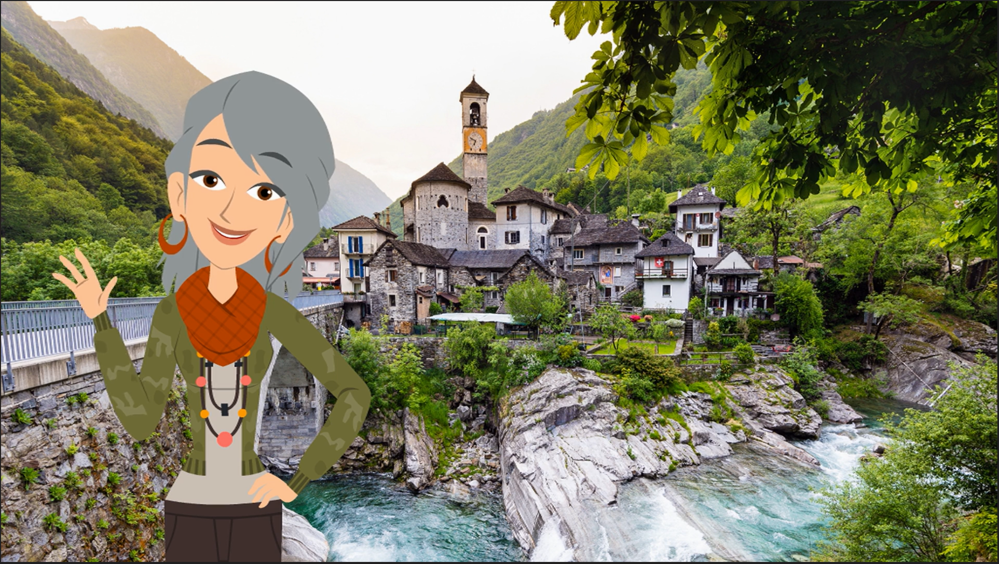
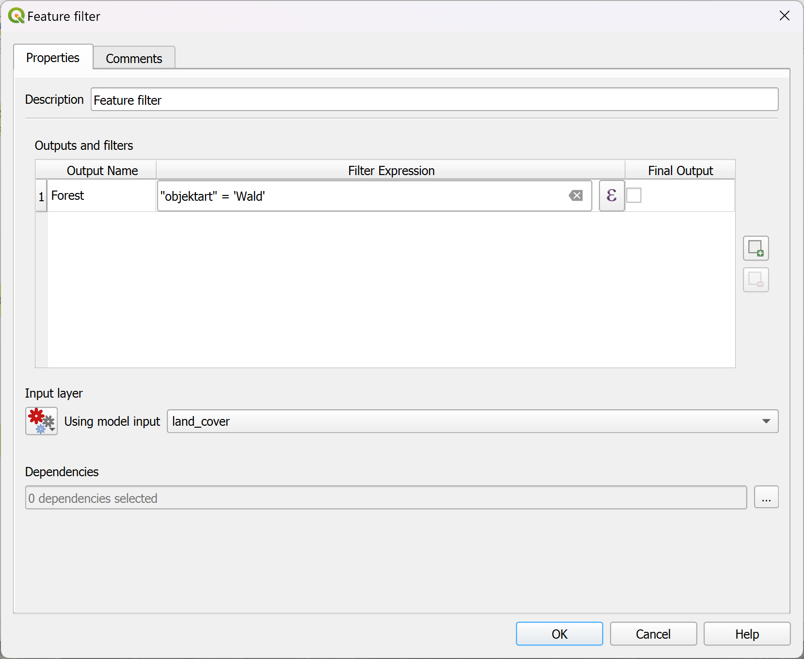
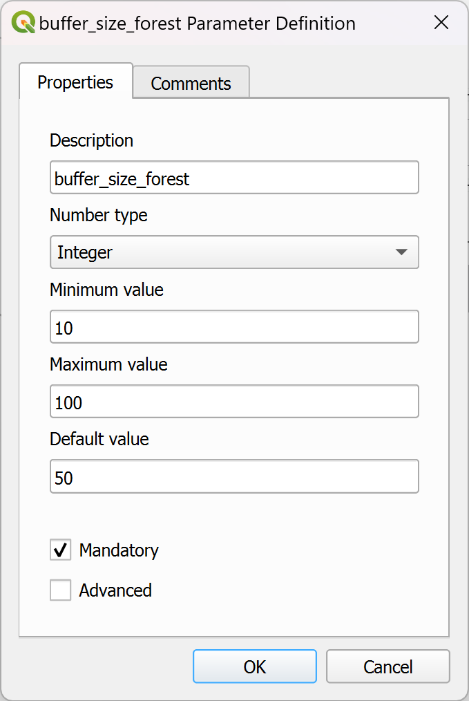
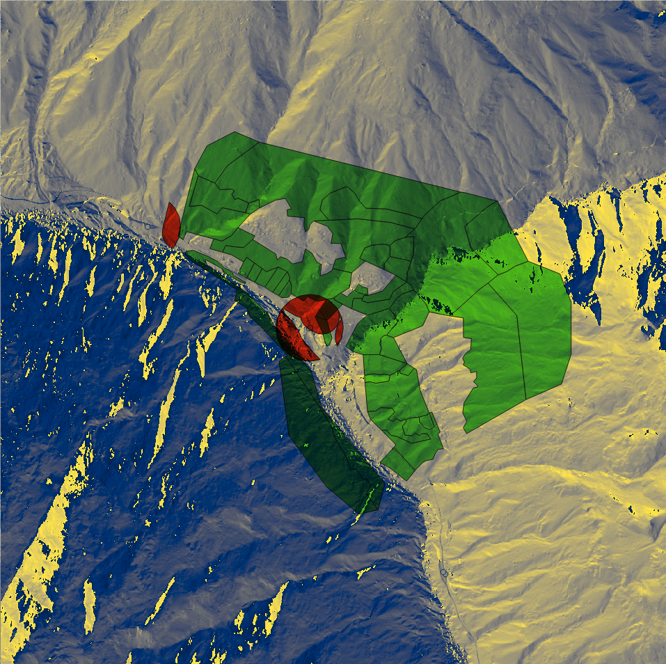
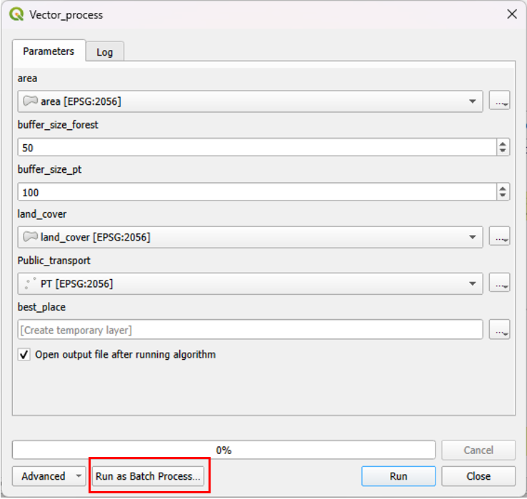
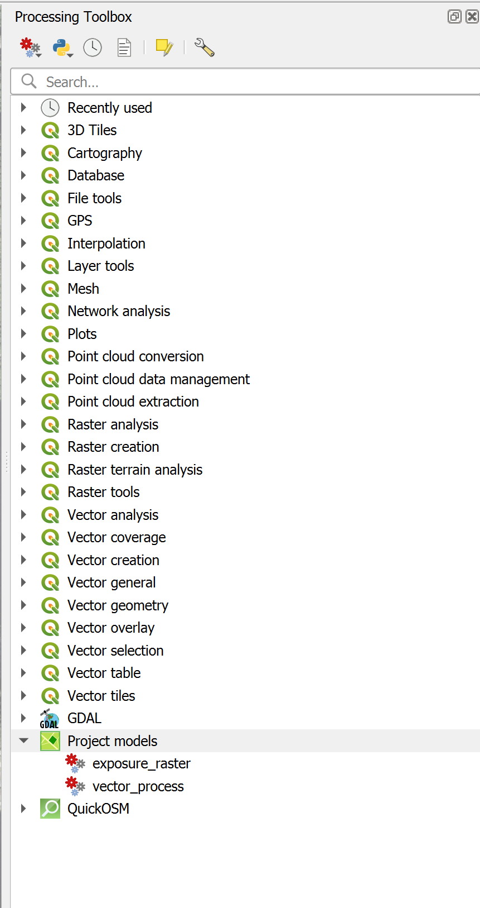
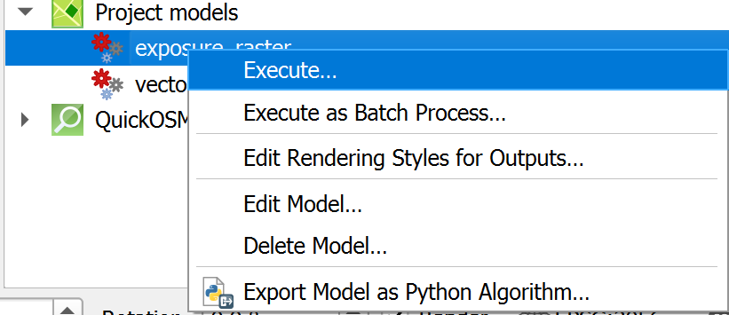
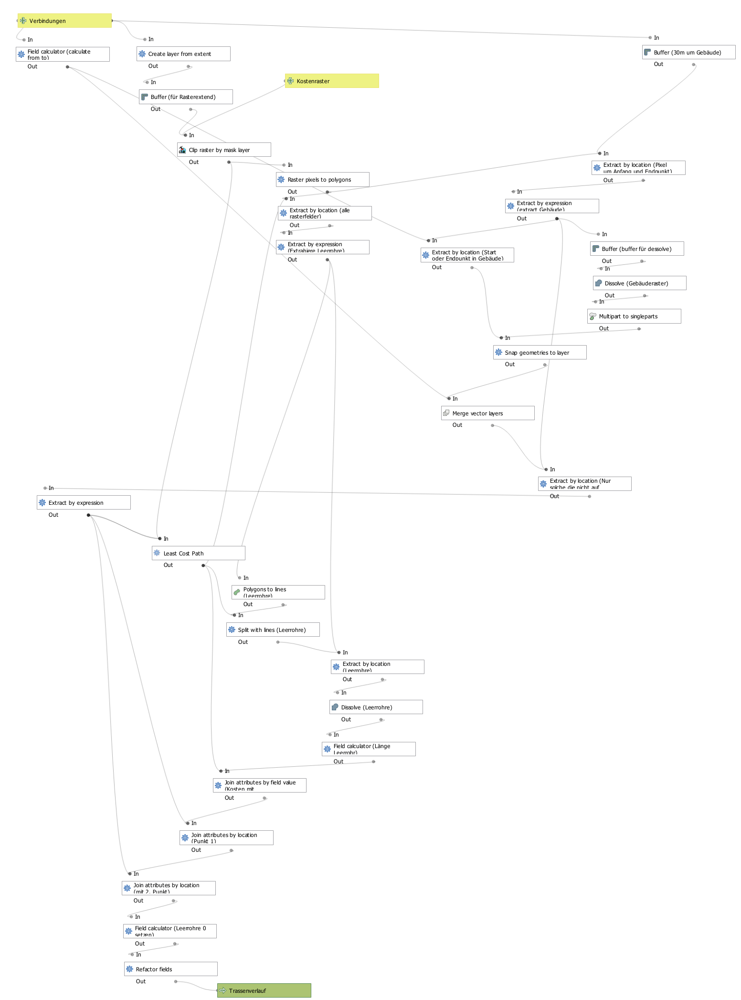
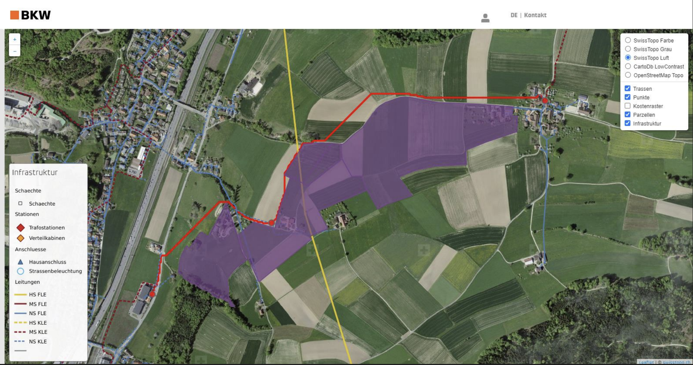

### Processing in QGIS: Advanced Geospatial Analysis Techniques and Tools --- ### Workshop Objectives - Introduction to the modeler - Practical application - Creating a raster data processing model - Creating a vector data processing model - Batch processing - Various ways to share the model - Conclusion & Outlook --- ### Introduction to the Modeler --v--  --v--  --v--  --v--  --v--  --v--  --v--  --v--  --v--  --- ### Practical Application Mission: Find the best locations for Maya the beekeeper's hives! Help Maya, a beekeeper in Lavertezzo, find the perfect spots for her new hives.  --v-- #### Action Plan 1. Raster data analysis - Area exposure 2. Vector data analysis Must meet the following conditions: - Maximum 50 meters from the forest - Maximum 100 meters from a public transport stop --- #### Raster Data Analysis Area exposure. --v-- - Project Download: <a href="https://tinyurl.com/mrvhz7k4" target="_blank" style="font-family: monospace;">https://tinyurl.com/mrvhz7k4</a><br ><br /> - Data - Layer " `area` " - swissALTI3D - via Plugin : <a href="https://plugins.qgis.org/plugins/swissgeodownloader/" target="_blank">Swiss Geo Downloader</a> --v-- Download the "swissALTI3D" data for the area  --v-- ##### Modeling steps ###### Create the model <br /> 1. Name the model `exposure_raster` 2. Save the model in the project  --v-- ##### Modeling steps ###### Merge the swissALTI3D layers <br /> 3. Add the GDAL algorithm "Merge" - Input layers: select the four tiles of swissALTI3D - Click "Show advances parameters" - Under "Additional Command line parameters", add: - `-of GTiff` --v-- ##### Modeling steps ###### Aspect ("Perspektive") <br /> 4. Add the "aspect" algorithm - Under "Aspect" name it `exposure` (this will be the output layer name) <img alt="aspect algorithm" src="assets/algorithme_exposition_en.png" style="height: 10em;"> --v-- ##### Modeling steps ###### Style the result 5. Add the "Apply Style" algorithm - Layer: change `Model Input` to `Algorithm Output`, set the value to "Exposure"  - Add an "File/Folder" input - In the "Apply Style" algorithm, change "Style File" to `Model Input`, set the value to `style exposure` 6. Save the model in the project --v-- **Result** | Model | Parameters | |----------|------------------------| |  |  | --- #### Vector Data Analysis <br /> Overlay of two buffer zones: - <b>50 meters from the forest</b> - <b>100 meters from public transport.</b> --v-- ##### Model Input <br /> - Data - Layer " `area` ", - Layer " `land cover` " - Layer " `PT` " --v-- ##### Model Steps ###### Create the model <br /> 1. Name the model `vector_process` 2. Save the model in the project  --v-- ##### Model Steps ###### Model input <br /> 3. Add a "Vector Layer" input - Description `Land Cover` - Geometry type `Polygon` 4. Add a "Vector Layer" input - Description `area` - Geometry type `Polygon` 5. Add a "Vector Layer" input - Description `PT` - Geometry type `Point` --v-- ##### Model Steps ###### Model input <br /> 6. Add the "Feature Filter" algorithm  - Source layer: use `Model Input`, set the value to `Land Cover` - Output and filters: add an output with "Output Name" = `forest` and "Filter Expression" `"objektart" = 'Wald'` --v-- 7. Add the "Clip" algorithm - Source layer: use `Algorithm Output`, set the value to `forest` - Overlay layer: use `Model Input`, set the value to `area` --v-- 8. Add the "Buffer" algorithm - Description: set the value to `Forest Buffer` - Source layer: use `Algorithm Output`, set the value to `Clipped` - Add a "Number" input, description `forest_buffer_size`  - Distance: use `Model Input`, set the value to `forest_buffer_size` --v-- 9. Add the "Buffer" algorithm - Description: set the value to `PT Buffer` - Source layer: use `Model Input`, set the value to `PT` - Add a "Number" input, description `PT_buffer_size` - Distance: use `Model Input`, set the value to `pt_buffer_size` 10. Add the "Intersection" algorithm - Source layer: use `Algorithm Output`, set the value to `Forest Buffer` - Overlay layer: use `Algorithm Output`, set the value to `PT Buffer` - ntersection: set `best_location` 11. Save --v-- **Result** | Model | Parameters | |----------|------------------------| |  |  | --v--  --- ### Batch Processing Now that we have two tools, they can be executed on batch data. - Batch processing allows running a model on multiple datasets automatically, without manual intervention between each execution. - This is particularly useful for applying the same process to multiple files or geographic data layers. --v-- #### How to Execute a Batch Process 1. Execute the tool  2. Click "Execute as batch process..." --v-- 3. Add the information for different batches  --v-- #### Advantages of Batch Processing - **Efficiency** : Allows processing large amounts of data in a single operation. - **Consistency** : Ensures the same parameters and methods are uniformly applied to all datasets. - **Time-saving** : Reduces the time spent repeating the same steps manually for each file or layer. --- ### Various Ways to Share the Model - Save in the project  - It appears in the toolbox - Right-click to access several options  --v-- - Save the model as `model3` format <br /> --v-- - Export as a Python script  - Once exported, the script can no longer be used in the Modeler... - Export as an image  - Export as a PDF. (This is not working well)  - Export as an SVG  --- ### Conclusion QGIS Modeler is a powerful tool for automating and optimizing geospatial analyses. It offers many advantages... --v-- #### Task automation Simplify complex workflows by grouping multiple operations into a single model. Save time and reduce errors by automating repetitive tasks. --v-- #### Increased efficiency and reproducibility Optimize your analyses and ensure consistent results using standardized models. --v-- #### Flexibility and customization Adapt models to your specific needs using expressions, variables, and parameters. --v-- #### Sharing and collaboration Facilitate sharing your models with others and encourage collaboration within your team. --- ### Outlook - Example of a large model - Add more algorithms via Plugins - Python scripts as algorithm - Ideas and missing features --v-- #### Example of a large model <a href="assets/model3_Trassenkosten-Ermittlung.pdf" target="_blank">  </a>  --v-- #### Add more algorithms via Plugins <a href="https://plugins.qgis.org/plugins/tags/processing/" target="_blank">https://plugins.qgis.org/plugins/tags/processing/</a> --v-- #### Python scripts as algorithm --v-- #### Discussion: <br /> Ideas and missing features --- ### End 😊 <br> ##### Thanks for your participation 🙏 <br> ##### Time for questions and discussion ❓